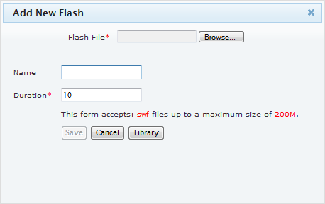

You can upload your Flash swf files to show on a Xibo layout.
Add a Flash File
- Click the "Add Flash" icon
- A new dialogue will appear:

- Click "Browse"
- Select the Flash file you want to upload from your computer. Click OK
- While the file uploads, give the flash file a name for use inside Xibo. Type the name in the "Name" box.
- Finally enter a duration in seconds that you want the flash file to play for.
Note that if this is the only media item in a region, then this is the minimum amount of time the presentation will be shown for as the total time shown will be dictated by the total run time of the longest-running region on the layout.- Click "Save"
Note that the C# control used in the Xibo .net client cannot render the background of Flash files transparently. Flash is always rendered on a white background.